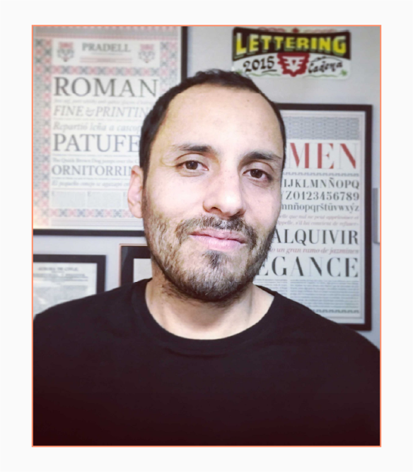
Roberto Osses Flores
contacto: robert.osses@uchilefau.cl
- Profesor Asistente
- Categoría académica docente
- Departamento de Diseño
- Facultad de Arquitectura y Urbanismo
Perfil Académico
Diseñador Gráfico especialista en materialidades del libro, diseño editorial y tipografía. Investigador con enfoque multidisciplinar en la intersección entre las perspectivas científicas y humanísticas, con especial interés en el patrimonio y las culturas visuales.
Asignaturas Impartidas
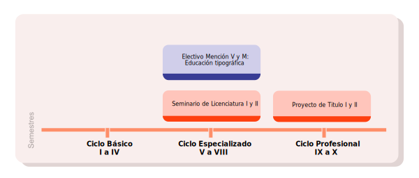
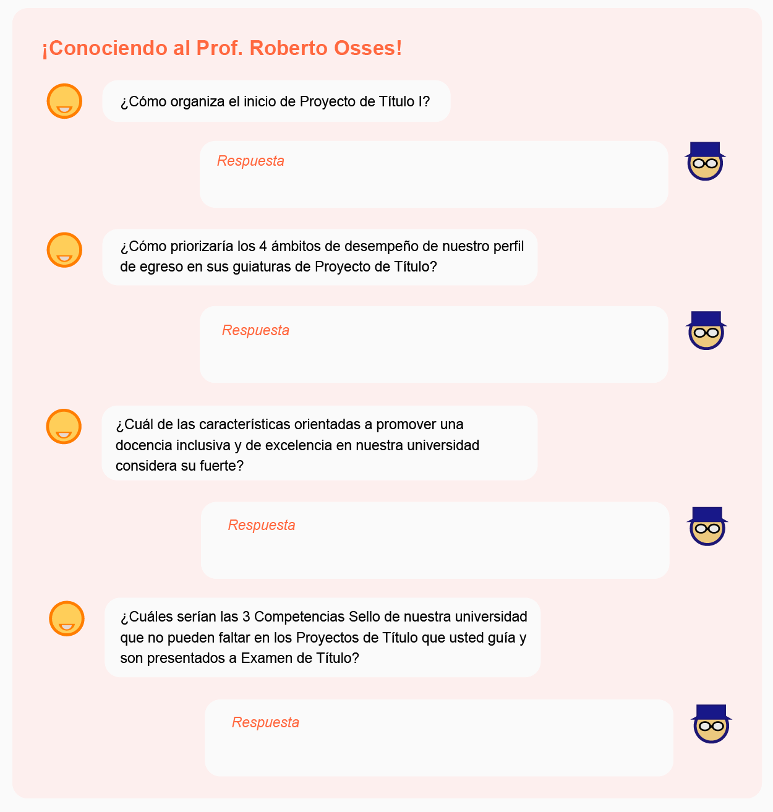
Áreas de Especialización
- 5. Creación, innovación proyectual y desarrollos tecnológicos.
- 6. Conservación e intervación de obras, entornos y ciudades patrimoniales.
- 7. Culturales visuales, materiales-inmateriales y mediales.
- 8. Fenómenos sensibles, perceptuales y corporales en el entorno.
Líneas de Investigación
- Identidad y Patrimonio
- Estudios Visuales y Mediales
- Diseño Editorial y Tipografía
Énfasis
- Innovación
- Investigación
- ¿A qué título profesional corresponden los proyectos de Título II aprobados que ha guiado Roberto Osses Flores?
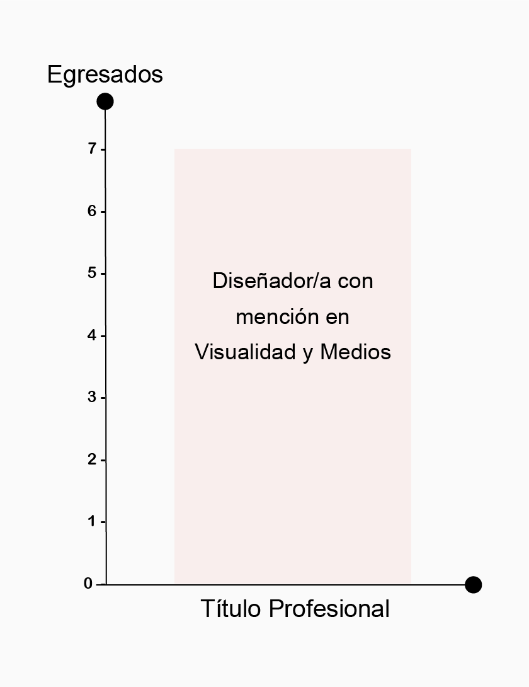
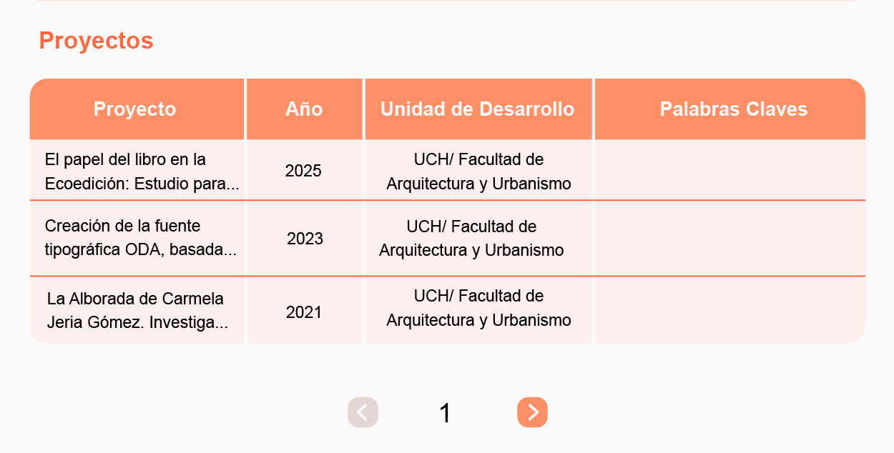
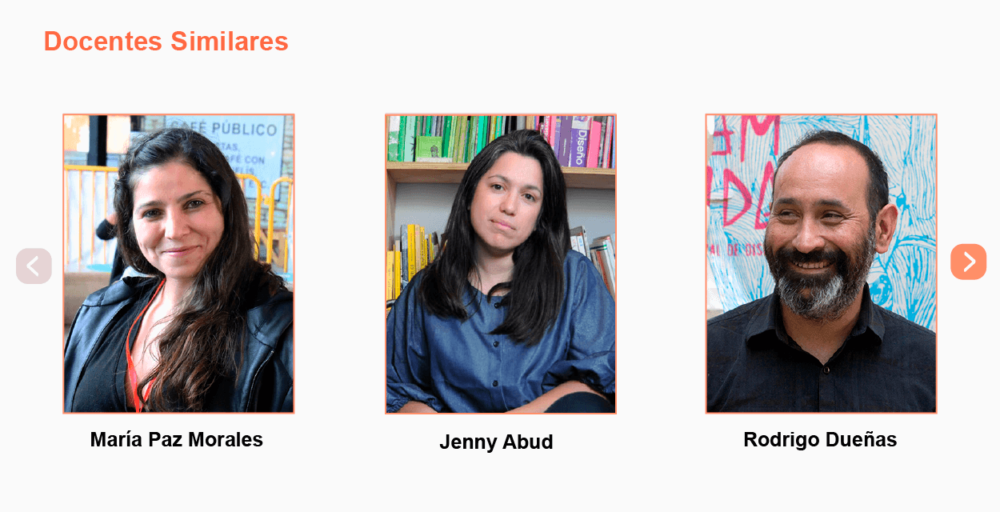
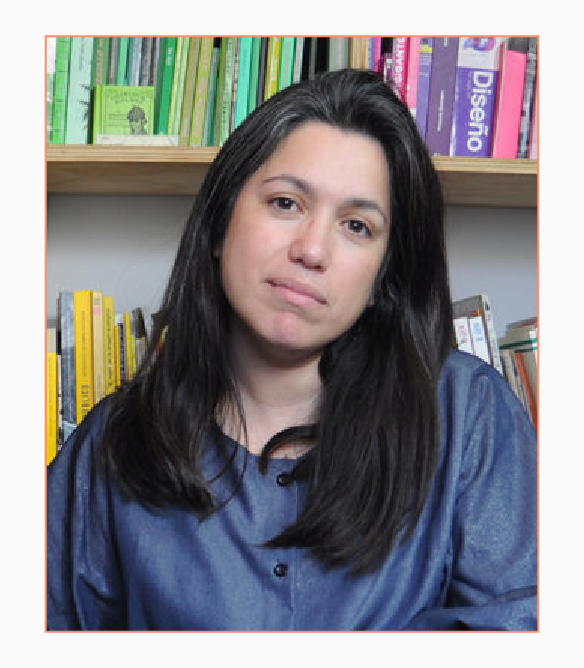
Jenny Abud Carrillo
contacto: jenny.abud@uchile.cl
- Profesor Adjunto
- Escuela de Pregrado Unificado
- Facultad de Arquitectura y Urbanismo
Perfil Académico
Diseñadora Gráfica...
Asignaturas Impartidas
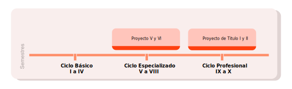
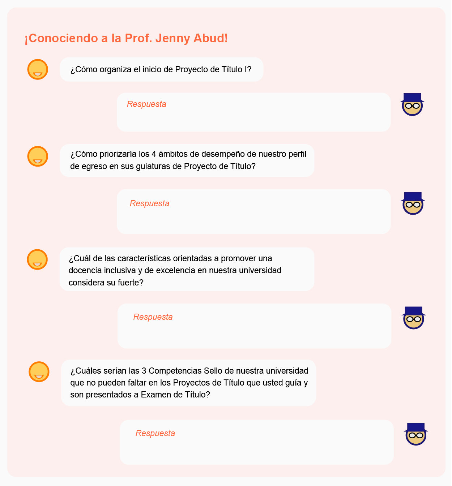
Áreas de Especialización
- 1.
- 2.
- 3.
Líneas de Investigación
- 1.
- 2.
Énfasis
- 1.
- ¿A qué título profesional corresponden los proyectos de Título II aprobados que ha guiado Jenny Abud Carrillo?
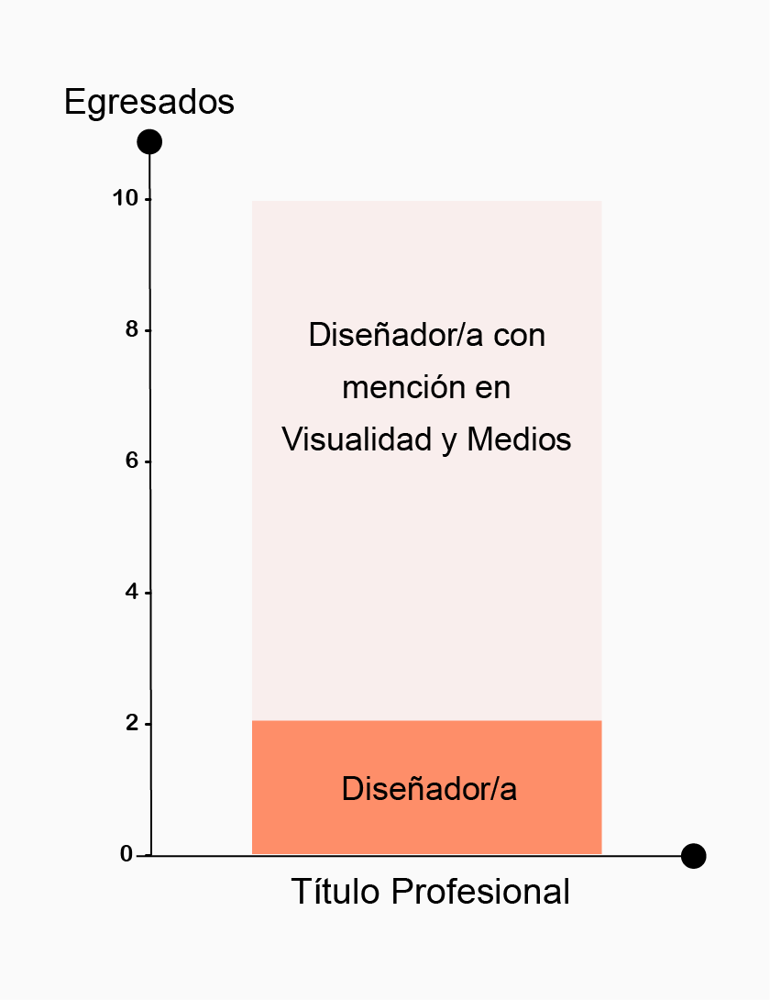
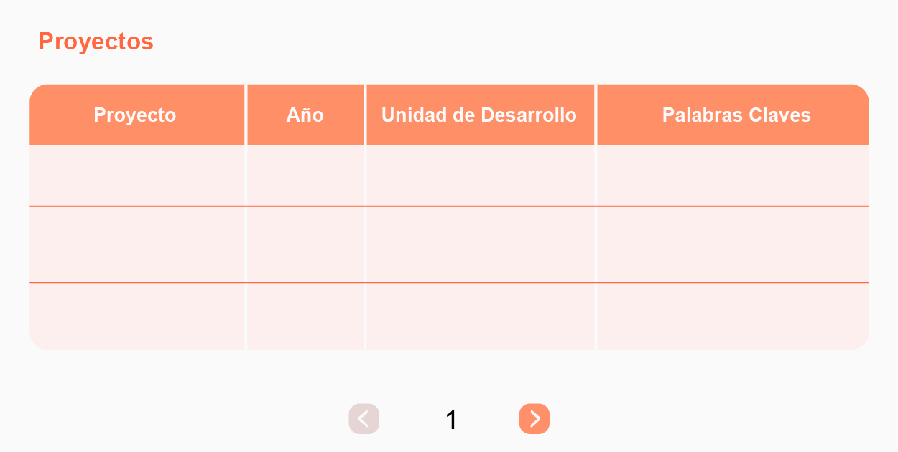
¿Cómo se relaciona su nota aprobatoria previa, de Proyecto de Título I, con la nota definida por la comisión examinadora de Proyecto de Título II?
¿Qué parte de las inscripciones en la asignatura de Proyecto de Título II con se han convertido en Exámenes de Título aprobados?
| Egresado/a | Título | Semestre | Proyecto | Nota |
|---|